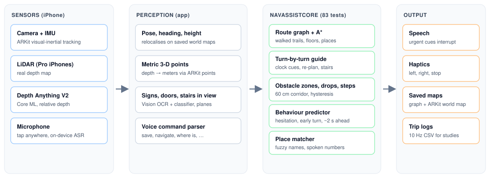
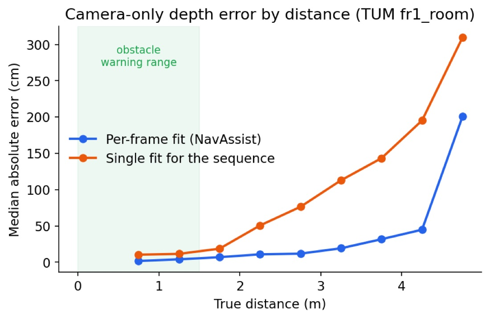

NavAssist
Indoor navigation for blind and low-vision people on an ordinary iPhone. You walk a building once; after that it guides you back to any room by voice.
The problem
GPS doesn't work indoors, so blind people often rely on memory, a cane and asking strangers to find a room in an unfamiliar building. Many indoor navigation systems need beacons installed in the building or a LiDAR sensor that only Pro iPhones have.
I wanted something that works on any recent iPhone, in any building, with no setup: say "save this place as kitchen" once, then later "take me to kitchen".
How it works

- Maps as you walk. ARKit tracks the phone's position. Every 0.5 m walked becomes a node in a route graph, and walks that cross are joined at junctions. Routes are found with A* and only use space someone has actually walked.
- Voice only. One screen: tap anywhere and speak. Speech recognition runs on the device, with 70+ phrasings ("where's the exit?", "what's around?"). A fuzzy matcher understands "two oh four" as room 204 but never mixes up different room numbers.
- Guidance. Spoken turn-by-turn directions plus vibrations (2 taps = left, 3 = right), clock-face corrections ("turn to 9 o'clock"), and re-planning when you go off route.
- Reads signs. On-device text recognition reads signs like "Room 204" and saves them as destinations, so you can go there without anyone saving it first.
- Obstacles, doors and stairs. Warnings only for things inside a 60 cm walking corridor, so it doesn't talk about every chair in the room.
The navigation logic is a separate Swift package with 83 tests that run on a Mac without an iPhone. I ported it to Kotlin (79 tests) as the first step towards Android.
The hard part: depth without LiDAR
To warn about obstacles you need to know how far away things are, in meters. Non-Pro iPhones have no depth sensor. A neural network like Depth Anything V2 can estimate depth from a single camera image, but only relative depth: it knows the chair is closer than the wall, not that it's 1.2 m away. Its scale also changes from frame to frame.
My idea: ARKit already tracks a few hundred 3-D points in every frame, with real distances, for its own motion tracking. I use those points as a ruler. Every frame, I fit the network's output to those points (a robust least-squares fit on inverse depth, dropping the worst 25% of points twice), then convert every pixel to meters.
Result
I measured it on the TUM RGB-D benchmark (137 frames with true depth from a Kinect sensor), running the same Core ML model and the same fitting code the app uses. The baseline uses one conversion for the whole sequence.
| Method | AbsRel ↓ | Within 1.25× ↑ | Median error ↓ |
|---|---|---|---|
| One conversion for the whole sequence | 0.172 | 70.0% | 26 cm |
| Per-frame fit (NavAssist) | 0.070 | 95.3% | 6 cm |


Accuracy barely changes from 25 points upward, and holds up with 10% noise added to the points, which matters because real ARKit points are noisier than the benchmark's.
Fewer false warnings
The first version compared obstacles against a "floor ruler" in the image. In a home test, a basket beside the path kept triggering "obstacle ahead". With metric depth, the app's warnings agree far better with warnings computed from true depth:
| Zone | NavAssist F1 | First version F1 | False alarms (new vs old) |
|---|---|---|---|
| Left | 0.89 | 0.53 | 10 vs 26 |
| Ahead | 0.99 | 0.57 | 0 vs 3 |
| Right | 0.96 | 0.61 | 4 vs 25 |
When both found an obstacle ahead, the distance was within 1.5 cm of the true distance (median).
Doors and stairs
Apple's built-in image classifier often missed stairs, which is the most dangerous case. I trained my own door, door-handle and stairs detector with Create ML on 4,494 Open Images pictures. On 717 held-out pictures it finds stairs in 79% of the pictures that have them (precision 91%), against 47% for Apple's classifier, and doors in 71% against 38%. It runs in 8.9 ms per image and the model is 6.9 MB.
What didn't work (yet)
I also tried to predict when a user is about to hesitate or turn too early, so the app can step in ("Not yet, keep straight for 2 meters"). I trained two small models on 7 motion features from 10 Hz trip logs.
In simulation, the early-turn model ranks events well (AUC 0.83, against 0.40 for the weights I first set by hand). But at a false-alarm rate a user would tolerate, at most 1 per minute, it only catches 13% of early turns. Speaking 6 false warnings a minute isn't acceptable, so this stays off by default.
The simulation also caught a real bug: I computed speed from path length, so tracking jitter looked like walking and no hesitation was ever detected. Speed now uses net displacement.
Limitations and next steps
- Depth was evaluated on one public sequence with simulated feature points. Real ARKit points are noisier and cluster on texture.
- Obstacle "ground truth" comes from true depth, not from people judging what counts as an obstacle.
- The behaviour predictor has only seen simulated walkers. The app includes a study mode and analysis scripts for testing with real users next.
- NavAssist is a research prototype. It doesn't replace a white cane, a guide dog, or orientation and mobility training.
What I learned
- Measure before trusting. The first obstacle method looked fine in demos; only the benchmark showed it missed most obstacles ahead.
- Use what the platform already gives you. The fix for depth wasn't a bigger model, it was using ARKit's tracked points, which were already there.
- Report what fails. The predictor result is a negative result, and it changed what I build next.